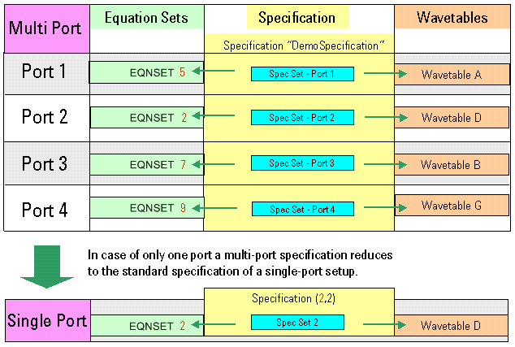
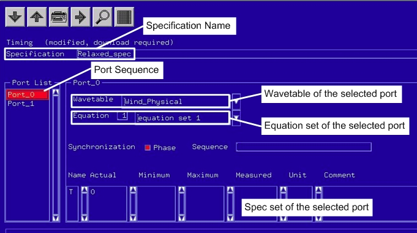

Multiport timing setup
The concept of a single-port timing setup (see Single-port timing setup) applies to the individual ports of a multiport setup. A multiport timing specifies the same data as a single-port timing setup - but for every port.
Because a multiport setup only works with equation-based timing, it is important to understand how the more common single-port timing setup and the multiport timing setup are related to each other.
Multi-Port versus Single-Port Timing Setup
- The syntax of equation sets does not change!
- The syntax of wavetables does not change!
- The specification is extended to meet the requirements of a multiport setup. Essentially, in
a multiport setup you define a single-port type specification per port. The multiport
specification is the sum of these port-specific specifications. There are no changes
defining a specification for a particular port compared to what is done for a single-port
setup.
Understanding a multiport specification is the key to understanding a multiport timing setup.
The multiport timing setup includes the following tasks:
- Definition of all port timing in equation sets. When an equation set covers a single port,
the equation is port specific.
The equation set may contain a number of timing sets (the same as in a single-port setup). These timing sets are port-specific.
- Definition of all port timing action in the wavetables. When a wavetable consists of a single port, the wavetable is port specific.
- Definition of specifications.
A specification is defined for all the ports you use in your test. A multiport timing specification
- defines a port sequence,
- assigns an equation set to every port of the port sequence,
- assigns a wavetable to every port of the port sequence,
- defines a spec set for every port of the port sequence,
- allows phase and sequence synchronization group definition when needed and assigns clock
domains when multiple clocks are used.Note The order of ports in a port sequence is important for automated period resolution setting.
Specification per Port Sequence
Equation sets (including the timing sets) and wavetables are the basic components of the timing setup. The specification puts them together to a complete timing.
A multiport timing specification is characterized by a name. This is a difference to single-port specifications which are characterized by a pair of integers (and optionally by a description which corresponds to a name). The following figure illustrates how the specification combines timing equation sets and wavetables defined for the ports of the port sequence to a complete timing.

This is exactly the same concept as in the case of a single-port setup! Compare the figure above with the figure in Single-port timing setup.
The following figure shows the Spec Tool.

Testflow and Timing Sets
Note that a specification does not specify the primary timing sets you may want to use in the test for the various ports. When you set up a testsuite in your testflow, the primary timing sets are specified in the testsuite editor. To determine a specific set of timing setup data (timing equation set, timing set, wavetable, spec set), a testsuite references
- a specification,
- one timing set per port, resulting in a sequence of timing set numbers.
For more information on multiport test suites, see Setting up a multiport test suite.
Functional changes
- Introduced before SmarTest 6.3.2